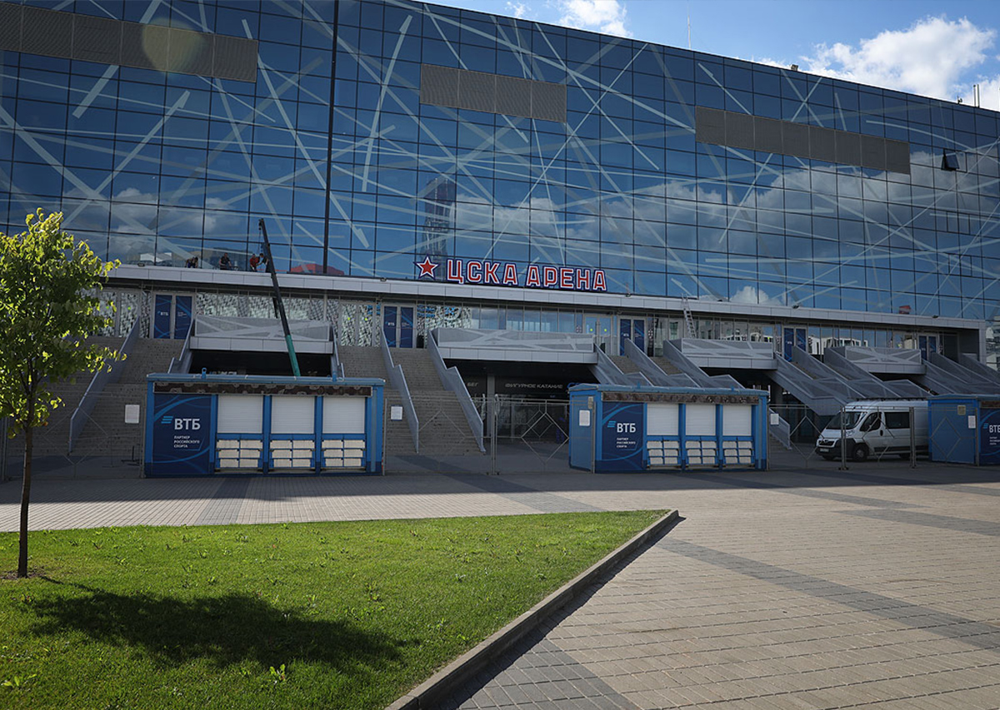
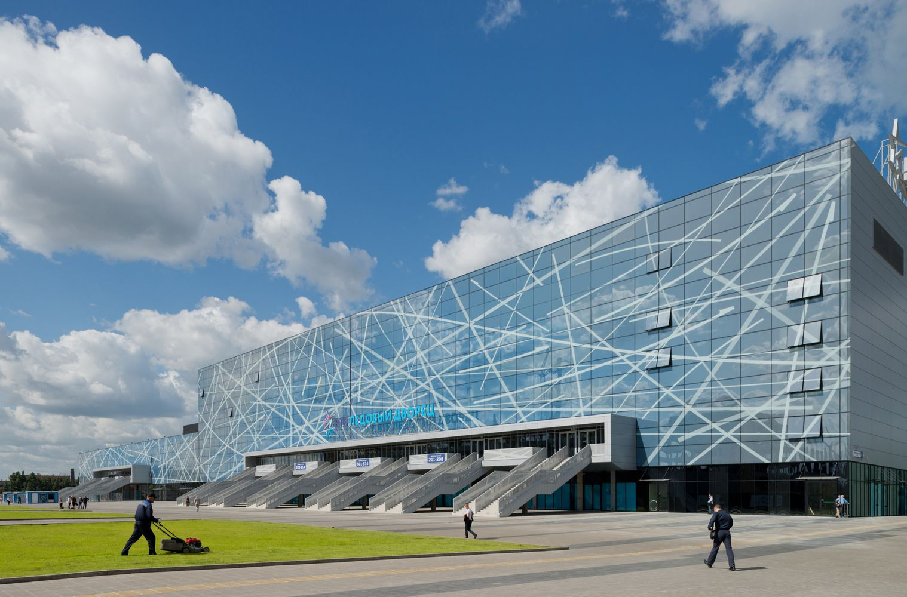
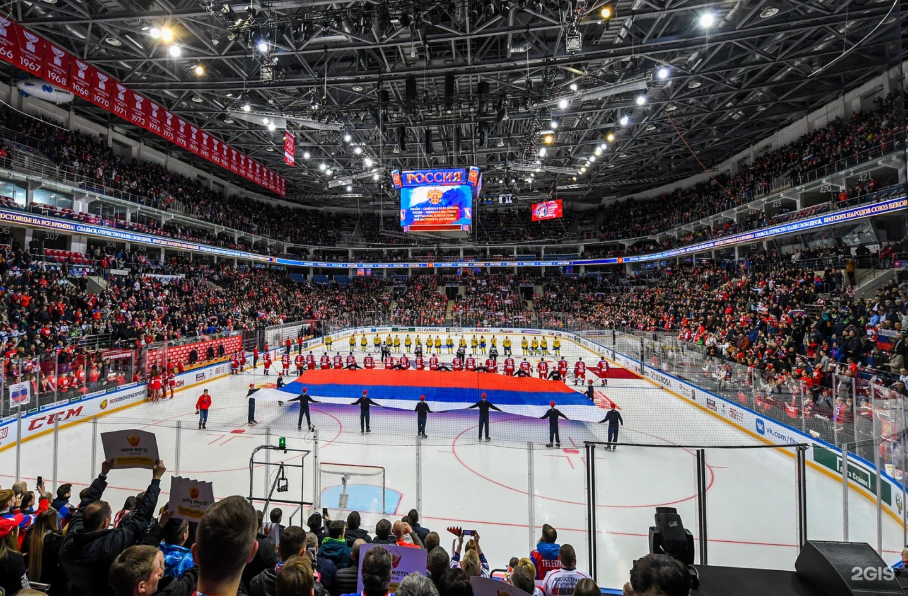
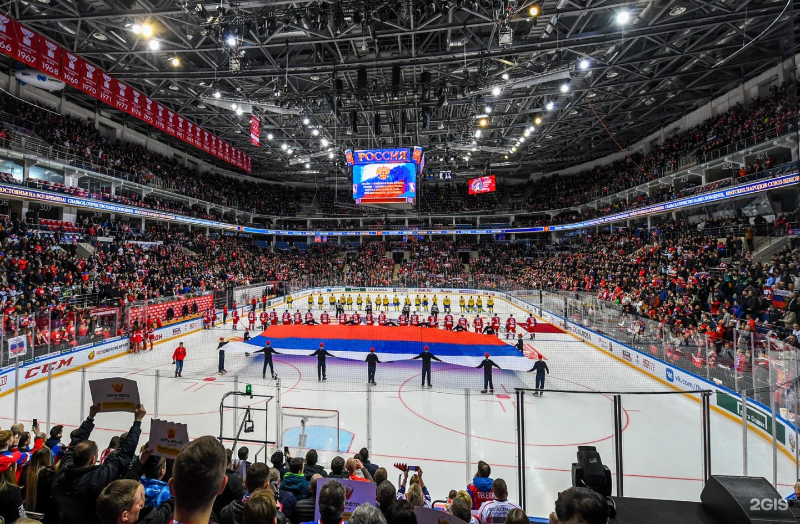

Домашняя арена ХК ЦСКА - ЦСКА-Арена


 

ЦСКА АРЕНА стала первым в России спортивным сооружением, вмещающим сразу три арены под одной крышей. Официальное открытие ледового дворца состоялось 26 апреля 2015 года. Большая арена вмещает 12000 чел., малая арена 3000 чел., а тренировочная 200 чел. Общая площадь комплекса — 70 000 м². Арена приняла матчи юбилейного 80-го Чемпионата мира по хоккею с шайбой в 2016 году, там был проведён Матч Звёзд КХЛ в этом же году. Арена является регулярным местом проведения одного из этапов Еврохоккейтура - Кубка Первого Канала. Также она включает в себя 23 раздевалки, порядка 80 комфортабельных VIP-лож для почетных гостей, 10 фудкортов.